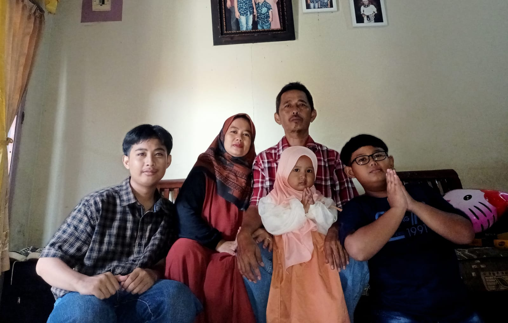

| No. | Nama | hubungan keluarga | jenis kelamin | Tempat Tanggal Lahir | Pekerjaan/Status |
|---|---|---|---|---|---|
| 1 | Yusupi | Ayah (kepala keluarga) | Laki-laki. | Kuningan 24-03-1982 | buruh |
| 2 | Ati | Ibu | Perempuan. | Kuningan 26-11-1986 | Ibu rumah tangga |
| 3 | M Diar Fahrurrozi | Anak pertama(saya) | Laki-laki | Kuningan 30-12-2006 | Mahasiswa |
| 4 | Ferdinand | Anak kedua | Laki-laki. | Kuningan 14-04-2014 | Pelajar |
| 5 | Malika | Anak ketiga | Perempuan | Kuningan 08-12-2020 | Pelajar |
Saya senang kalau bisa menghabiskan waktu bersama keluarga. Walaupun hanya makan atau ngobrol di rumah, hal sederhana seperti itu sudah menyenangkan bagi saya.
Harapan saya, semoga keluarga kami selalu sehat dan bahagia. Saya ingin kami tetap rukun dan saling mendukung satu sama lain.
Hubungi kami via email: diarfahrurrozi2019@gmail.com atau Instagram: @diarfahruu
Terima kasih telah mengunjungi website profil keluarga kami.
Website Profil Keluarga | Dibuat menggunakan HTML